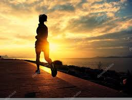

¿Por qué correr?
Correr no solo es una forma de ejercicio, es una actividad que puede transformar tu vida de muchas maneras. Descubre cómo esta práctica puede impactar positivamente tu salud física, mental y emocional:
- Mejora tu salud cardiovascular: Al correr regularmente, el corazón se fortalece, lo que permite bombear sangre de manera más eficiente...
- Ayuda a mantener un peso saludable: Correr es una de las actividades físicas más eficaces para quemar calorías...
- Reduce el estrés y mejora la salud mental: Al correr, el cuerpo libera endorfinas, también conocidas como las "hormonas de la felicidad"...
- Fortalece músculos y articulaciones: Aunque se considera un ejercicio de bajo costo, correr trabaja una amplia gama de músculos...
- Promueve una sensación de logro personal: Cada paso que das mientras corres es una victoria...
Galería



Próximos Eventos
Participa en nuestras emocionantes carreras y eventos. ¡Una excelente oportunidad para poner a prueba tus habilidades y disfrutar de la experiencia!
- Maratón de la Ciudad - 10 de febrero, 2025
- 5K Noche Brillante - 20 de marzo, 2025
- Carrera de Obstáculos - 5 de abril, 2025
- Ultra Maratón de Montaña - 15 de mayo, 2025